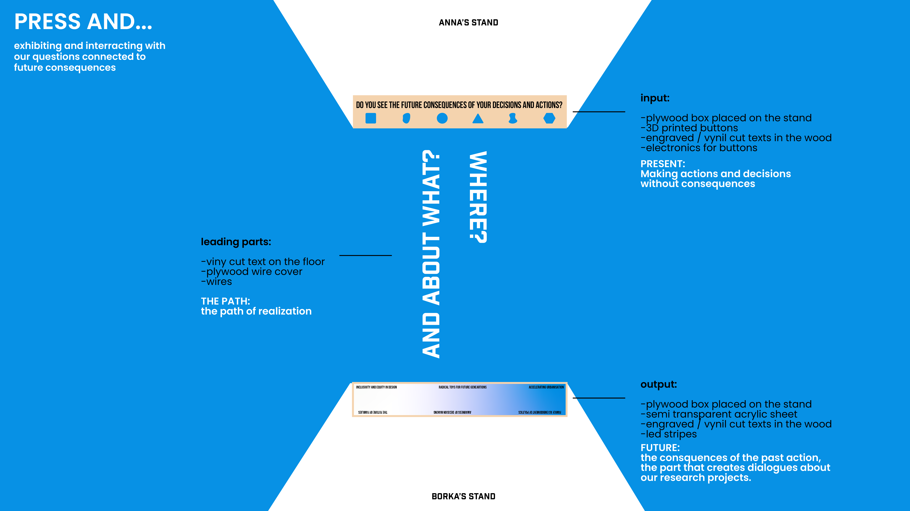
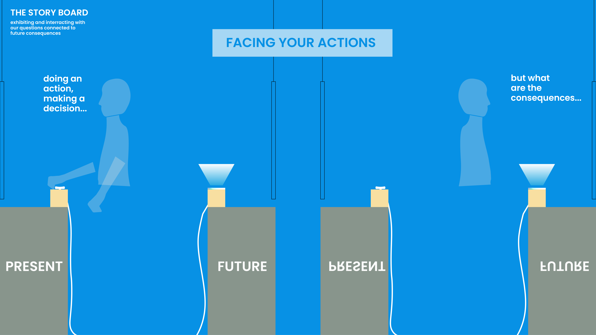
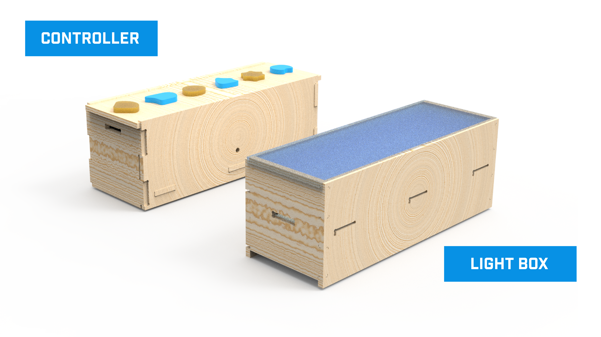
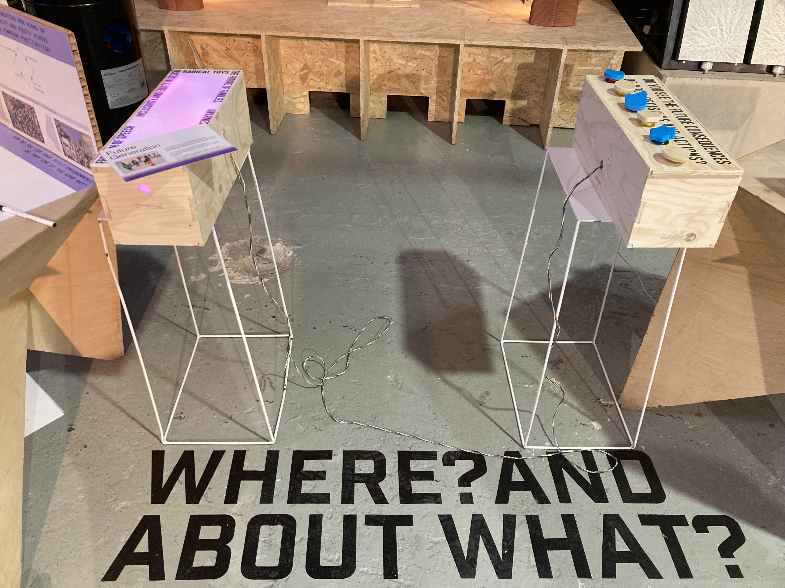

CREUAR
by Borbala Moravcsik and Anna Mestres.
Here you can find the repository of our second challange.
Our goal is to raise awareness about the impact of our driven and individual decisions, by a critical design.
The theoretical concepts that are mixed in our artefact would be the butterfly effect, the concept of superposition and the Newtonian rationing of consequences.

System Diagram
Since both of us is dealing with future generations and different decision making methods in the present for them. Our purpose and solution critical interaction to create conversations at the Design Dialogues, which will make our guests think about how their decisions and actions change something in the future they don't see at the moment and lead them to our individual research questions - about decisions in the present for future generations.


Render
Final Design
This is the final design that we use for the Design Dialogues II. It was working perfectly and we did not have any problems. Actually, we had some feedback by some of the participants. They recomended us to change the sentence of the button box, to indicate somewhere in the sentence the words turn back or go back the future, in order to be able to show the next move, to see the lights changing.

Personal Reflection
My job during this whole process was electronics. I managed everything we needed in terms of electronics and lights, as well as programming and assembly. I also helped Borka in terms of validating the work he was doing. Especially with the measurements. So we had more points of view. And given my experience in creating plans and objects with tolerances.